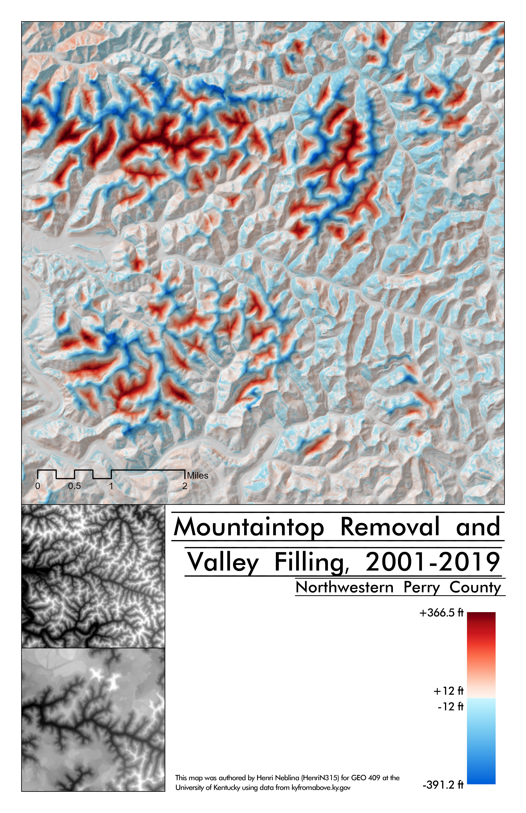

Caption for Cesium slideshow
My theme relates to surface mining in the state of Kentucky. To examine this, I am focusing on the Eastern Kentucky counties of Perry, Breathitt, and Knott.
One of the first things people think of when they think Appalachia is coal, and for good reason. Appalachia has served as one of the country's most productive coal producing regions. However, relatively few follow up with the corollary of such extraction--destruction of the landscape. This destruction has only increased in severity as coal in the region grows scarcer and scarcer, and, as a result, mining companies are resorting to more extreme forms of extraction like mountaintop removal.
The goal of this project is to provide a visualization of the effects of surface mining in Kentucky. In doing so I will present maps detailing surface cover in KY and that quantify mountaintop removal and valley filling.
Visualizations created from lidar data provided by KyFromAbove in ArcGIS Pro. Additional sources of information from nationalmap.gov and MRLC, May, 2023.
Page and visualizations created by Henri Neblina for GEO 409, Department of Geography, University of Kentucky. Spring 2023.
A focused look on the landcover in Eastern Kentucky. In the region, there is a prominent amount of barren land and uncharacteristic scrubland as a result of mining. Higher resolution here.
A quantitative look at how mountaintop removal and valley filling have changed the landscape. Higher resolution here.